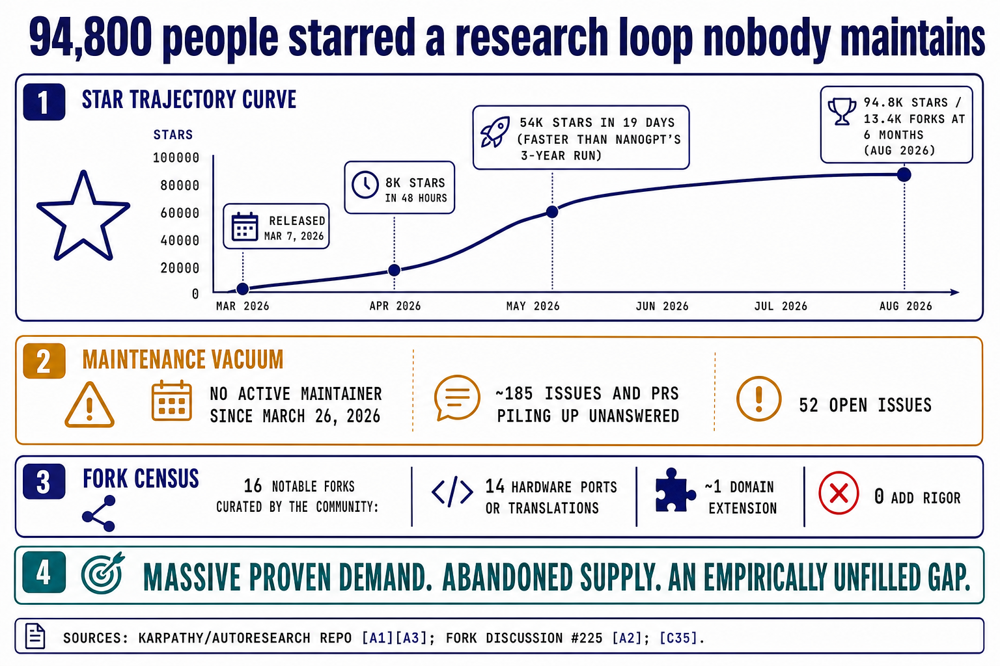
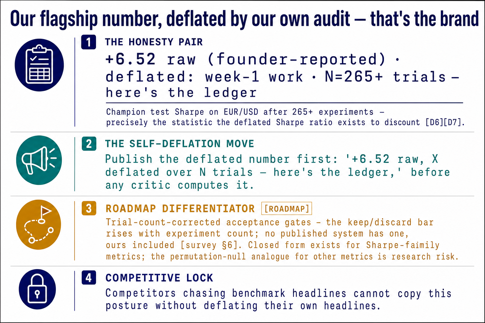
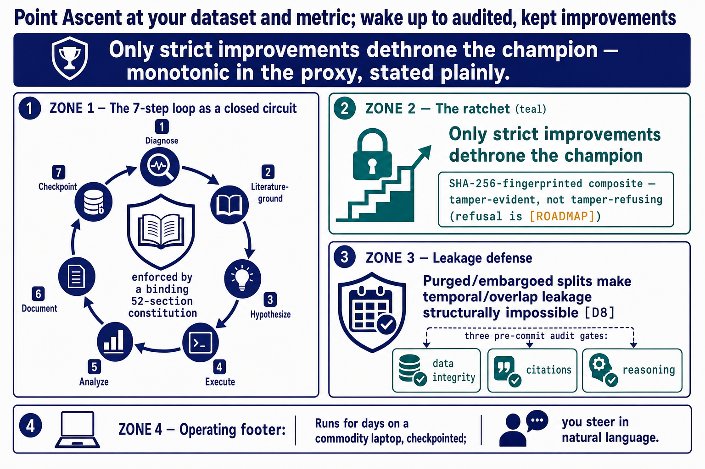

Point Ascent at your dataset and your metric. It runs literature-grounded, audit-gated experiments for days on a commodity laptop, keeps only strict improvements, and hands you a fingerprinted, one-command-reproducible bundle for every kept champion.
Every number below appears in a pack artifact and carries its source tag. Where a figure is founder-reported or assumed, it says so at the point of use rather than in a footnote.
Not "underserved" — measured, and empty.
94,800 stars and 13,400 forks in six months for the minimal loop; no active maintainer since 2026-03-26.A1
0 of 16 community-curated notable forks added rigor. Fourteen are hardware ports or translations.A2
The sustained-campaign × audit-gated quadrant has no occupant across all 20 competitor rows.
Not a plan — running code with forensic logs.
Removing the citation gate raised invalid experiments 42% and produced 3 leakage incidents. One task, one seed, founder-reported.
Six domains, one protocol, full ledgers — finance, physics, medical imaging, clustering, tabular fraud, LLM training.
Three gates run before commit. A failing experiment never enters the champion line.
Margin is architectural, not a pricing hope.
BYOK puts token COGS on the user's card: 82.0% gross margin at 150 users, ≥85% at 300+.
$125/mo against $1,100/day of the practitioner's own time — one-tenth of a loaded working day per month.C25
Core TAM $2–3B, job-filtered at the TAM layer with the arithmetic shown.
And discipline fails at published scale. Both sides of this market are broken, in opposite directions: humans are slow and leak; machines are fast and fail. Neither is a failure of execution. Both are failures of enforced method.
A binding 52-section protocol governs every experiment. Three programmatic checks run before any commit — not linting, not advice: an experiment that fails a gate never enters the champion line. Refusal is the default state.
Purged and embargoed super-folds. validate_no_overlap() runs programmatically and the runner refuses to launch on any overlap.D8
Every reference verified against live indexes before compute is spent. Ungated fabrication rates run 14–95%; a refused experiment costs a message, not a GPU-hour.D35
The agent may not, by contract, write a result row. The runner writes what actually happened.D33
Not a dashboard of green numbers. A laboratory notebook that cannot be falsified — read like a trading terminal, steered like a chat.
An append-only log records every experiment — kept and discarded — with seed, config, git commit, and gate verdicts. It is the denominator every honest statistic needs.D6D9
The deflated Sharpe ratio — or the trial-count-corrected analogue for other metrics — computed from the true ledger count and displayed beside every raw champion figure.D6D7
A visual constructor with purge, embargo, and label-horizon buffers, drawn on your actual dates.D8
Audit-gate and metric sections become read-only once a campaign starts. The runner enforces it against the agent too.
Tracks the composite proxy against each raw target metric, and alerts when they diverge past a band — because proxy optimization characteristically helps, then hurts.D31
The keep/discard threshold rises with ledger count: a candidate that would have been kept at trial 20 is rejected at trial 220 unless it clears the inflation-adjusted bar. No published system has this gate — the proof of concept included.D6
The constitution adapts its rigor vocabulary per domain. Nobody gets a diminished version of the method.
A computational-biology postdoc with an interesting dataset, a clear metric, and no ML engineering depth. The system caught her preprocessing leakage before any metric existed — the method she lacked, supplied without shame.
The 40th signal variant this month, at 11pm. Enough trials guarantee a great in-sample Sharpe at true zero.D7 He sets the embargo window and sleeps. The self-deflation stops his scroll; the ledger, discards included, earns his renewal.
Head of research at a systematic fund. She is buying the audit trail and the campaign memory, not the hill-climbing — fingerprints, reasoning traces and winner archives as a review artifact.
All results below are founder-reported, single-seed in most domains, on public datasets with contamination caveats, and reproducible from the repo — not independently verified. That framing is binding on every artifact we publish.A6
| Domain | Result | Trials |
|---|---|---|
| EUR/USD signals | Sharpe +6.52 — raw, pre-deflation | 265+ |
| QQQ signals | Composite Sharpe +1.32 · PSR 0.997 | 216+ |
| Higgs classification | AUROC ≈ 0.8675+ | — |
| PathMNIST OOD | AUC 0.997 | — |
| Olivetti faces | Conditional ARI 0.874 | — |
| Fraud detection | AUC 0.6097 vs AutoGluon 0.522 / H2O 0.518 | — |


A 24/7 steering loop on mid-tier models costs $3–12/day of your own tokens — against a conservative $1,100/day for your own time.C25 BYOK is the architecture, not a discount gimmick.A12
I ran 265+ experiments across six domains, logged every trial kept and discarded, and never wrote a line of Python.
Every instruction given to the system over months of operation fits in one readable file, and none of it is code. Somewhere in month two the pattern became obvious: everything the human contributed was some form of no — no, that split leaks; no, cite the paper or discard the idea; no, one change per experiment; no, the champion stands until something strictly beats it.
Execution stopped being the bottleneck; discipline did. The field keeps making agents more capable. Nobody is making them more honest. So the discipline got written down — all of it — into a constitution that never gets tired at 2am.
This site arranges the pack; it invents nothing. Sixty-four documents and twenty-one rendered visuals, generated by the startup-skills pipeline and cross-reconciled across layers. Everything below opens in the pack reader — rendered, with the architecture diagrams drawn.
Market sizing · Unit economics · Risk matrix · Experiment board
